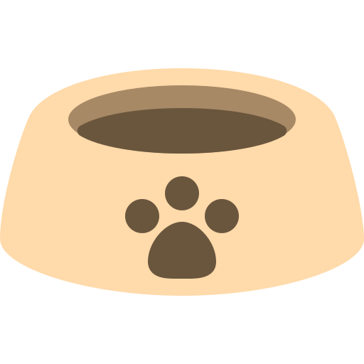
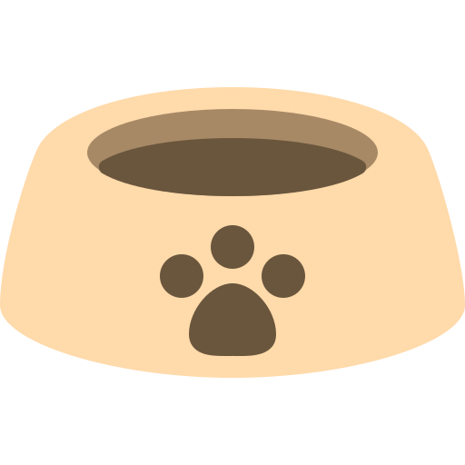

Pets

 

1. Bacon Q Dog

Visual Description: Brown labradoodle wearing colorful lei
Bacon Q. Dog is a 9yr old labradoodle. He prefers to spend his days lounging among the three different beds/couches that his family has gifted him. He enjoys a walk or two around the neighborhood, as long as he can pretend that he doesn't see any of the other animals to avoid the embarrassment of not wanting to admit he has no wolf-like skills in chasing them.
At night just as the rest of the family is ready to relax, Bacon suddenly wants to release all of his energy. He will place his toys on a mini couch and frantically drag the couch around, giving his toys "a ride." There is also a lot of rolling. Lots and lots of rolling.
Photo Gallery:


Likes:
- Belly rubs
- Playing tug-of-war
- Sneaking onto the couch
© Siddarth Jalagam
2. Fitz

Visual Description: Boston terrier watching a tennis ball at the table
Loves chasings tennis balls, chipmunks, squirrels, and birds. Often found sitting by the fire in wintertime, and in sun patches when available. He's energetic, mischievous, and easily bored. He loves people and gets grumpy if left without a lap too long.
Loves barking up trees, running around on the lawn, and digging in the dirt looking for moles. He especially likes getting treats and whines when he comes inside and doesn't get a snack.
Photo Gallery:


Likes:
- Blankets
- Being warm
- Barking
© Siddarth Jalagam
3. Sage

Visual Description: A smiling golden retriever lying on the bed
Sage is a 3 year old Golden Retriever. She is one of the laziest dogs. She loves sneaking into the bedroom and hopping onto the neatest bed. She also loves riding in a car with the windows open feeling the wind and air. She enjoys walking, only if you take her for a ride to a big arboretum or park. Walking around the neighborhood is not necessarily her cup of tea.
Her favorite food is corn. One day, she stole corn on the cob from the dining table, which was surprising because she is normally gentle and polite. She took the stolen corn to the patio and enjoyed her meal by herself. Unfortunately, the corn turned out to be unripe, so she ended up vomiting it all later.
Photo Gallery:


Likes:
- Carrots
- Naps
- Big parks
© Siddarth Jalagam
4. Miumiu

Visual Description: Silver gradient British shorthair cat in a wedding dress
Miumiu is a five-year-old silver gradient British shorthair cat. She was born in Russia and raised in the United States and China. She is a mom of two babies. She loves to sleep.
Miumiu is kind of timid and afraid to meet strangers. But she is very close to her family, she loves to lie next to her family. She is very talkative and loves to meow.
Photo Gallery:


Likes:
- Chicken breast
- Sleeping
- Observing birds outside the window
© Siddarth Jalagam
5. Peddie

Visual Description: A cute naughty golden retriever.
Peddie, the Golden Retriever, is a charming and lively companion known for his beautiful coat and playful nature. He's a perfect partner for outdoor fun, loved for his loyalty and gentle disposition.
Peddie's intelligence and friendly demeanor make him a beloved member of his family and a source of joy for everyone who knows him.
Photo Gallery:


Likes:
- Swimming
- Running in the park
- Meeting new friend
© Siddarth Jalagam